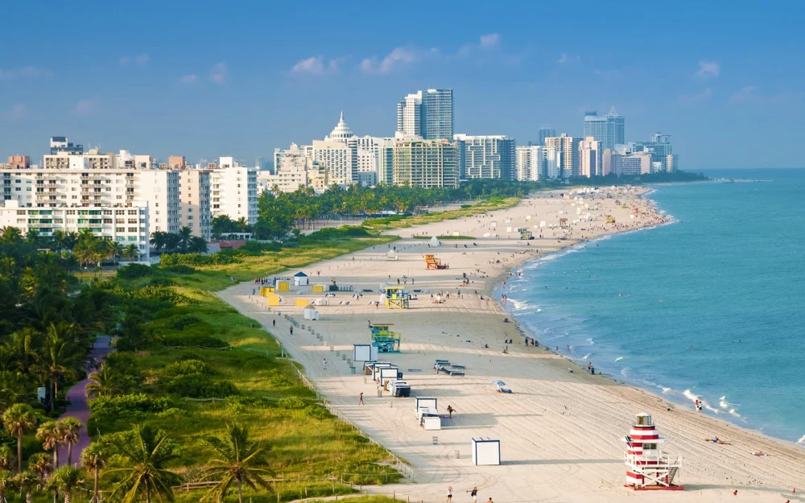
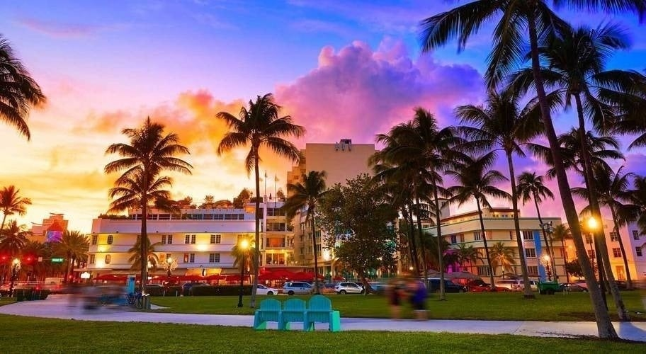

W ciągu dnia Miami Beach tętni życiem i słońcem! Złote plaże, ciepłe wody oceanu i charakterystyczne pastelowe budynki w stylu art déco tworzą niepowtarzalny klimat. To idealne miejsce na relaks, sporty wodne i spacery wzdłuż Ocean Drive. Promenada pełna kawiarni i butików zaprasza, by poczuć prawdziwy rytm Florydy — radosny, beztroski i pełen energii
Kiedy słońce zachodzi, Miami Beach zamienia się w centrum nocnego życia. Kluby, bary i restauracje rozświetlają miasto, a muzyka i taniec słychać do rana. Blask neonów odbijający się w oceanie tworzy magiczną scenerię, idealną na romantyczny spacer lub noc pełną wrażeń. Nocne Miami Beach to miejsce, gdzie każdy może poczuć się częścią filmowej historii – pełnej blasku, rytmu i niezapomnianych emocji
